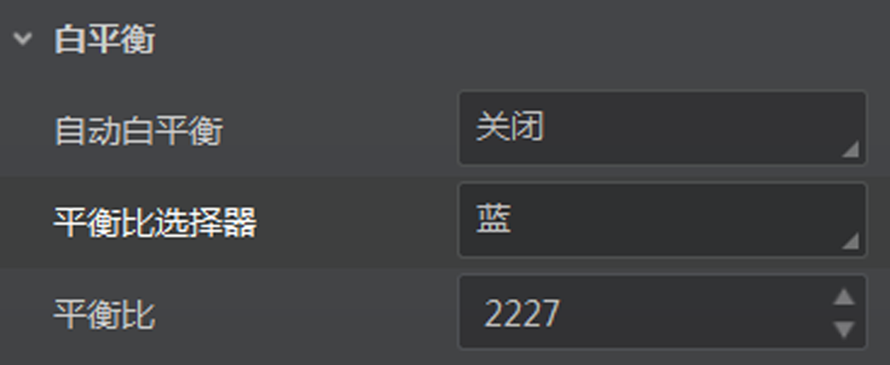

彩色相机YUV、RGB、BGR格式下，白平衡设置的方法与Bayer格式有所差别。
彩色相机YUV、RGB、BGR格式下，白平衡相关参数有自动白平衡、平衡比选择器和平衡比，如下图所示。

图 1 白平衡参数
说明：
相机支持的像素格式与相机型号以及固件程序有关，具体请以实际参数为准。
- 自动白平衡
-
分为“关闭”、“一次”和“连续”三种模式。
- 关闭
-
选择“关闭”时，可通过平衡比选择器和平衡比设置红、黄、蓝各分量数值。
- 一次
-
选择“一次”时，相机根据当前场景运行一段时间后停止自动白平衡。
- 连续
-
选择“连续”时，相机根据当前场景，自动进行白平衡调整。可通过平衡比选择器和平衡比查看红、黄、蓝各分量数值。